A pocket-sized drink tracker for nights out. Log what you drink, watch your BAC live, and see the whole table's stats in real time.
No App Store needed. Open it in Safari and add it to your Home Screen, it runs like a regular app.
Open app.idrinkalot.comEnter the Google account email you use on the Play Store. We'll add you as a tester and email you the link to install.
No spam. Can't wait? The web app works on Android too: app.idrinkalot.com
Log a drink, see the line move. Widmark formula plus your body stats and stomach state, recalculated every second.
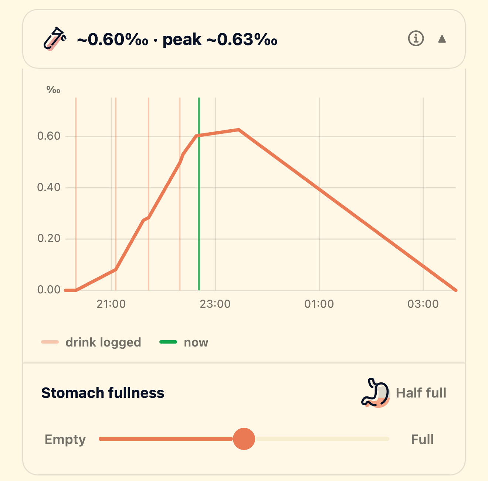
Beer, shots, wine, cocktails. Add anything in two taps, or backdate one you forgot to log earlier.
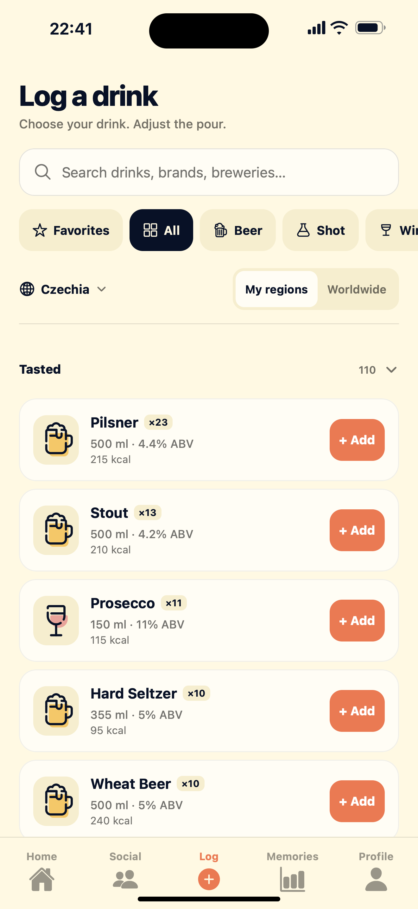
Every drink in the catalog tracked against your history. Watch your percentage tick up as you work your way through it.
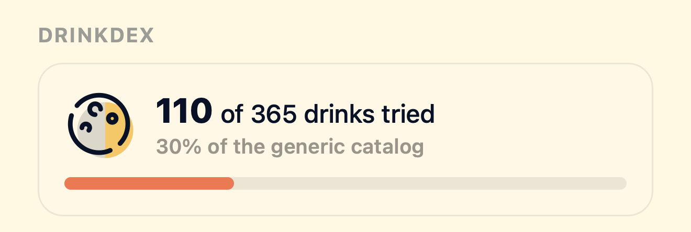
Units, calories, duration, peak BAC, sober-by time. Plus your goals, ticking down as you go.
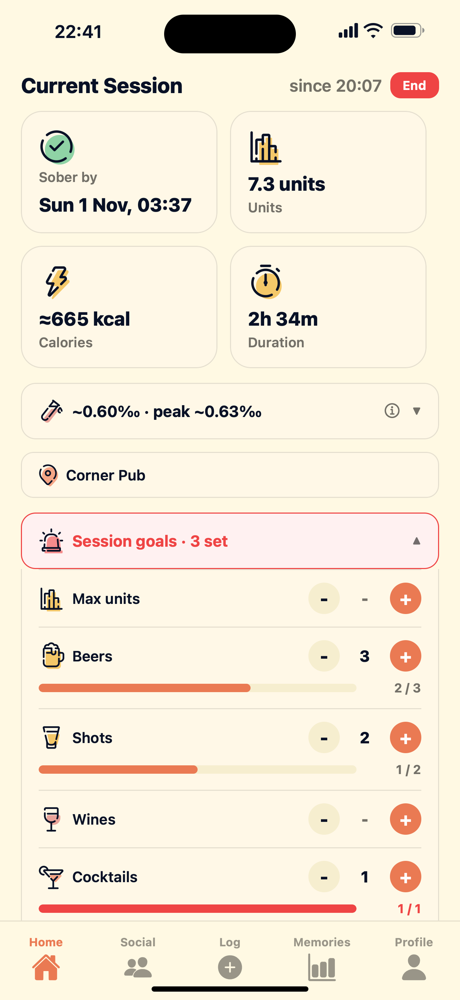
Weekly unit cap and per-category session goals, pre-loaded every time. Hit the limit, get a water-break nudge. Or skip it.
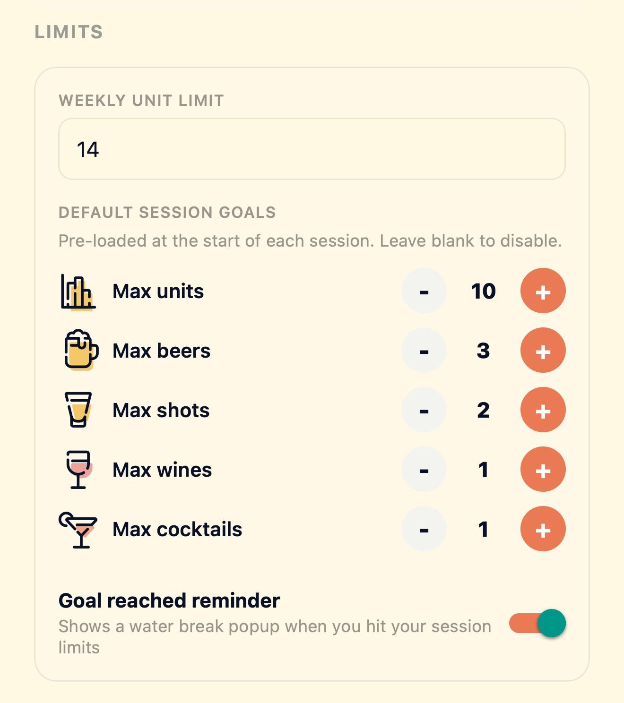
Start a session, ping your friends, and watch each other's drinks roll in live. Tap anyone to see their full BAC curve and timeline.
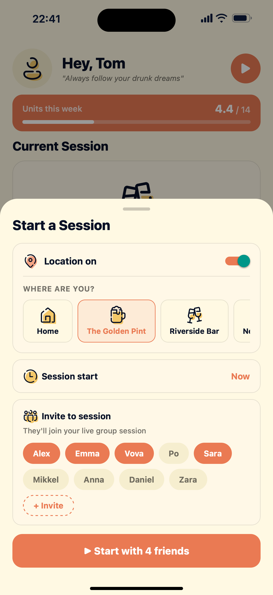
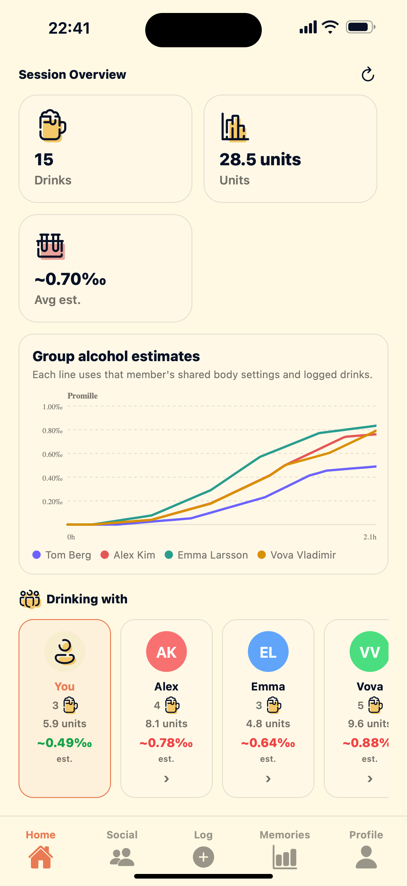
Usernames or friend codes for typing, QR for face-to-face. Tap any friend to see their lifetime stats: total units, sessions, favourite drink.
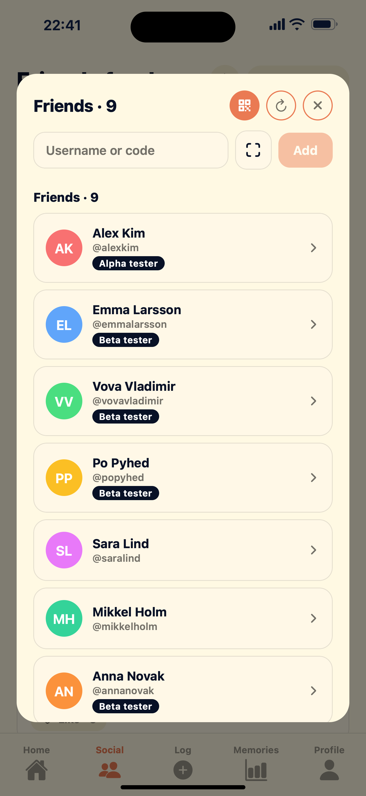
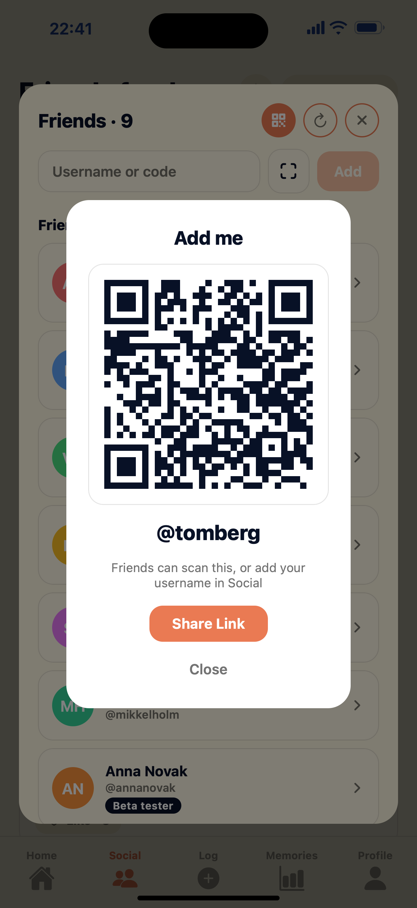
Total drinks, total units, sessions, average per session, total likes, favourite drink. Pull up the receipts on any friend.
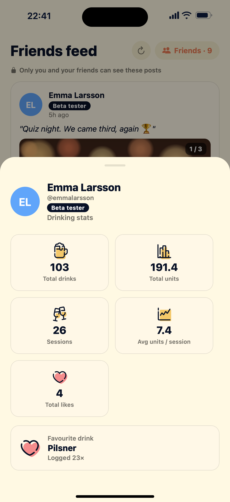
Longest drink streak. Longest sober streak. Total units logged. The kind of stats you can share at the pub or keep to yourself.
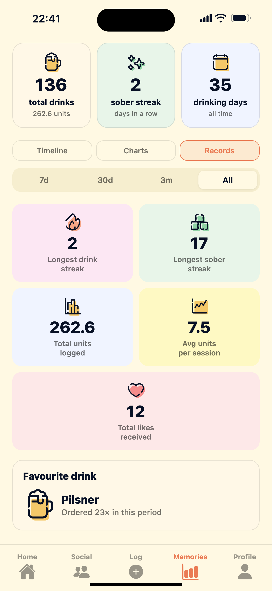
By category, by day of week, top drinks. The data doesn't moralize. It just shows up.
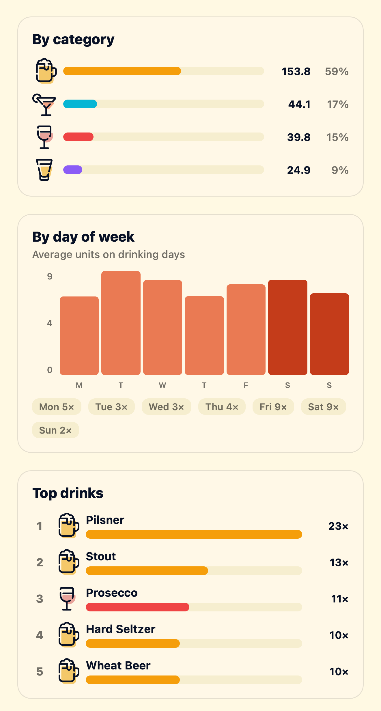
End a session and share it: venue, drinks, units, peak estimate, a caption, and up to four photos. Only the friends you've added ever see it.
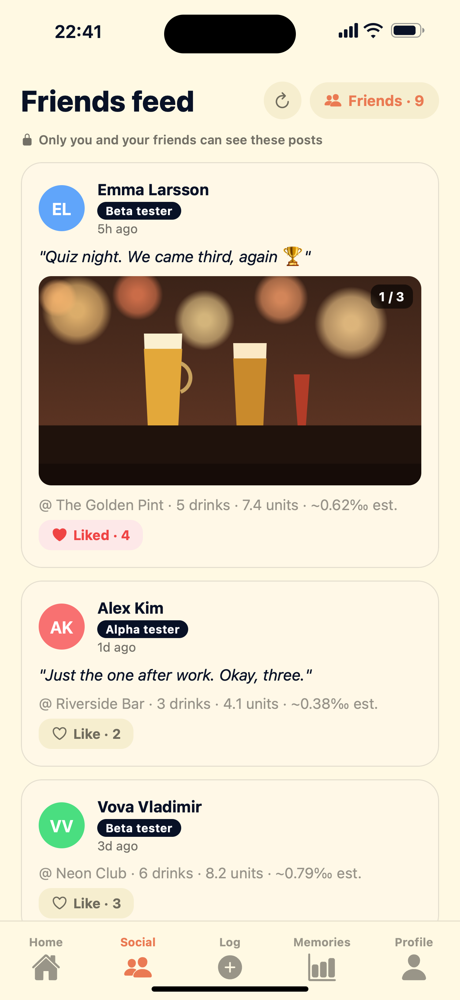
iDrinkALot is a drink tracker for nights out. You log drinks as you go and the app shows your estimated BAC live, your sober-by time, units, calories and session goals. You can also run group sessions where friends see each other's drinks in real time.
It uses the Widmark formula with your weight, sex and age, plus a stomach fullness slider that changes how fast alcohol is absorbed. The curve is recalculated every second. BAC numbers are estimates, not medical measurements. Don't use them to decide if you can drive.
Yes. On iPhone, open app.idrinkalot.com in Safari and add it to your Home Screen, no App Store needed. On Android, join the Google Play beta above, or use the same web app in your browser.
Yes. Start a group session, pick a bar and invite friends. Everyone sees each other's drink count, units and BAC estimate live, and you can tap any member to see their full curve and timeline. Add friends by username, eight-character friend code or QR code.
Both. Switch between promille (‰) and BAC % in the settings.
Only you and the friends you add. There are no public profiles and no algorithmic feed. We don't sell your data or share it with advertisers, and deleting your account removes everything. See the privacy policy.